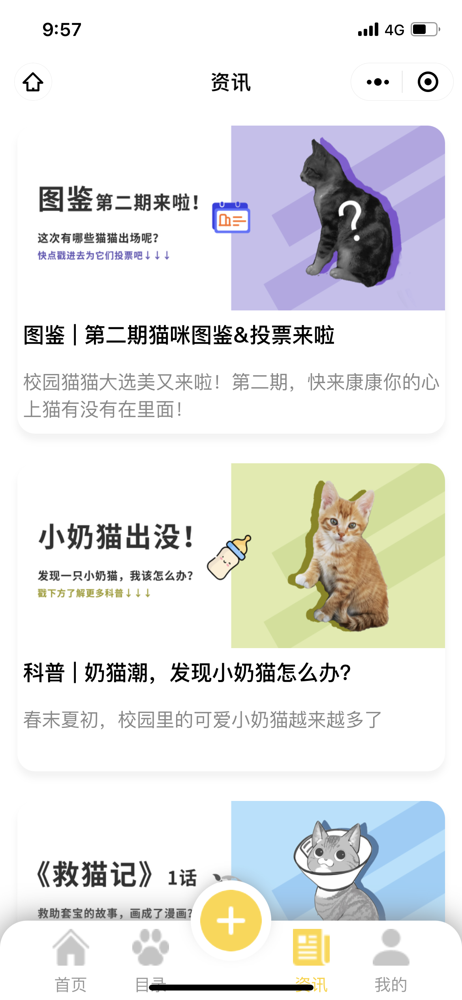

Wayfare Weave
- Architected a React map-based dining planning platform with theme planning, commenting, mapping, calendar scheduling, and user authentication features, deployed on vercel and render.com
- Engineered an interactive hypertext system with Node.js frontend and MongoDB backend, allowing users to link arbitrary components of multi-modal nodes (image node, text node, restaurant node)
- Stack: MongoDB + Express + React + Node.js + TypeScript
Youtube Teller
- Implemented a project with a primary focus on transforming videos into sentences using a multimodal approach
- Devised and executed a sophisticated multimodal transformer model that incorporated elements from CLIP Prefix and GPT-2 architectures, enabling the concise summarization of YouTube videos into single sentences
- Conducted training and evaluation of the model using the Microsoft Research Video Description Corpus and YouTubeClips datasets, employing established metrics such as BLEU, CIDEr, METEOR, and ROUGE, achieving state-of-the-art efficiency and performance levels
- Stack: PyTorch + Transformer + Numpy + Pandas + Teacher Forcing
Design Portfolio
- A capstone team project built for course CSCI 1300 - UI/UX
- Stack: Design + Figma + HTML + CSS + JavaScript + Sketch
Foodie Mobile Application Version

- Foodie Mobile Vision - A React food ordering app specifically designed for university students to order from foor courts and cafes on campus.
- Designed and developed a mobile application for on-campus food ordering on the Android and iOS platforms, offering users features such as food browsing, search, order rating, and order management
- Utilized React Native, GraphQL, Express, Node.js, and MongoDB to develop a full stack application
- A capstone team project built for course COSI 153 - mobile application development taught by professor Timothy Hickey
- Stack: MongoDB + React Native + Apollo + Node.js + GraphQL + Express
Foodie Web Version

- Foodie Web Version - A React food ordering app, Foodie, designed to provide university students with quick and easy food ordering from restaurants and cafes on campus.
- A capstone team project built for course COSI 153 - mobile application development taught by professor Timothy Hickey
- Stack: React + JavaScript
Catpus

- Catpus - Architected a WeChat program for the student voluntary organization "Catpus DHU" at Donghua University to assist with helping stray cats on campus
- Implemented an interactive HTML/CSS frontend and Django backend, which were deployed on Alibaba Cloud and connected to a MySQL database
- Stack: Wxss + Wxml + Wechat Cloud Database
Sound -> Image Generation with Emotion and Semantics Feature
- Conducted multi-modal research at the domains of image and sound transformation combining semantic feature
- Employed TensorFlow and PyTorch frameworks to implement a comprehensive sound-image cGAN model, featuring decoder and encoder components at the pretraining state to extract image features
- Web Scraped over 5,000 YouTube videos and Google images utilizing Requests and Selenium packages
- Architected data preprocessing and visualized performance using NumPy, Pandas, Matplotlib and Seaborn
- Stack: Tensorflow + Keras + Scikit-Learn + Multimodal Generation